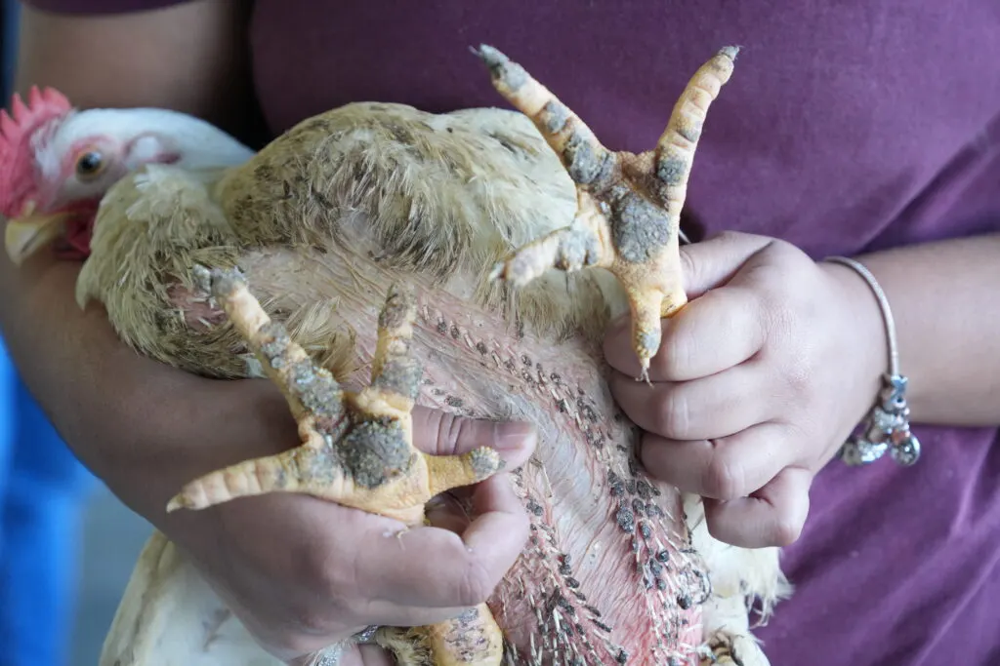
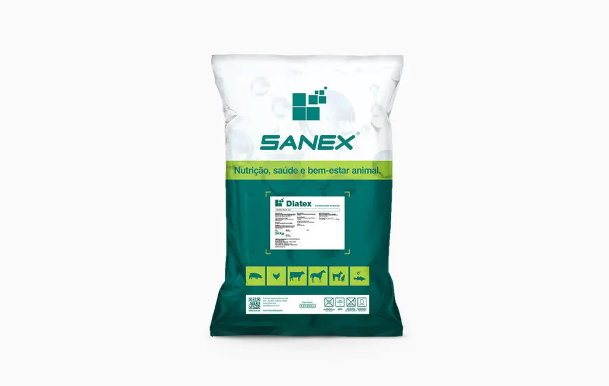

A próxima aplicação da nanotecnologia no agronegócio pode começar no chão dos aviários. A NanoBrasil e a Sanex desenvolvem uma nova versão de um secante para camas aviárias, formulada para prolongar o controle de microrganismos e melhorar as condições sanitárias do ambiente em que os frangos são criados.
O projeto sintetiza o modelo de atuação da NanoBrasil: partir de uma dor concreta da indústria, reunir quem domina o produto e o mercado, incorporar conhecimento científico e validar a solução em condições reais. A Sanex contribui com mais de duas décadas de experiência em condicionadores ambientais; a NanoBrasil, com sua plataforma nanotecnológica.
Os testes em granja são conduzidos na Universidade Federal de Lavras (UFLA), com a principal referência brasileira no assunto, Antônio Gilberto Bertechini, professor da universidade – em estruturas de referência no país.
“Hoje, temos clientes que querem um produto com esse perfil. Esse foi o grande motivo para procurarmos a NanoBrasil. Sabemos que as nanopartículas têm uma capacidade antimicrobiana muito forte e queremos ampliar o tempo de controle das bactérias na cama aviária”, afirma Marcelo Huber, médico-veterinário e diretor-executivo da Sanex.
Problema sob os pés
A cama aviária é a camada de material que recobre o piso dos galpões e permanece em contato direto com os animais durante todo o ciclo de produção. Quando acumula umidade, fezes e matéria orgânica, pode favorecer a proliferação de bactérias e fungos, a liberação de amônia, a compactação do material e a presença do cascudinho, inseto comum nesse ambiente.
As consequências ultrapassam o desconforto dos animais. Uma cama excessivamente úmida ou compactada pode contribuir para lesões nas patas, como as pododermatites, e ampliar a exposição a agentes infecciosos. A amônia liberada pela decomposição das excretas também pode irritar os tecidos e o sistema respiratório.

O problema se renova a cada ciclo. Entre a saída de um lote e a entrada do seguinte, os produtores precisam revolver, tratar e preparar a cama, além de realizar procedimentos de limpeza e desinfecção. Trata-se de um trabalho que demanda tempo, mão de obra e manejo adequado para reduzir a carga de patógenos antes da chegada dos novos pintinhos.
“O manejo da cama aviária dá muito trabalho e ocupa muitas horas do produtor. Quando ele não é bem feito, o novo lote pode enfrentar problemas logo na fase inicial. Um condicionador mais fácil de aplicar permite que esse produtor faça o manejo com mais rapidez e tenha tempo para cuidar de outras etapas do galpão”, explica Marcelo.
Uma solução consolidada
A parceria não parte do zero. Fundada em 2003, a Sanex desenvolve e fabrica aditivos nutricionais, zootécnicos e condicionadores ambientais para a produção animal. A empresa possui 16 distribuidores no Brasil, uma equipe de aproximadamente 30 profissionais e estrutura uma rede para ampliar sua presença na América Latina.
O trabalho com camas aviárias começou em 2007, quando uma empresa exportadora procurou a Sanex em busca de uma alternativa aos inseticidas utilizados contra o cascudinho. A exigência era controlar o inseto sem comprometer as condições necessárias para continuar exportando seus produtos.
A resposta foi o Diatex, condicionador ambiental desenvolvido ao longo de dois anos, com participação da Universidade Federal do Paraná. A pesquisa originou uma dissertação de mestrado, e o produto foi registrado no Ministério da Agricultura em 2009.

A solução passou a atuar sobre duas frentes importantes: o controle físico do cascudinho e a redução da umidade da cama. Com o avanço da utilização, a empresa também identificou efeitos sobre a presença de microrganismos nos primeiros dias de criação.
Como o secante atua
O Diatex é produzido a partir de três tipos de terras diatomáceas selecionadas pela Sanex entre mais de 20 materiais analisados. A terra diatomácea é um pó mineral natural formado por estruturas fossilizadas de microalgas, caracterizado pela elevada porosidade e capacidade de absorção.
Cada uma das matérias-primas exerce uma função na formulação. Uma delas possui maior capacidade de absorver água; outra reage com substâncias presentes na cama e ajuda a reduzir a liberação de amônia; a terceira contribui para limitar a presença de determinadas bactérias.
Sobre os insetos, a ação é física. As partículas aderem ao corpo do cascudinho, desgastam a camada externa responsável pela retenção de água e absorvem lipídios de sua superfície. Sem essa proteção, o inseto perde umidade e morre por desidratação. Como o mecanismo não depende de inseticidas, não deixa resíduos químicos nos animais e reduz o risco de desenvolvimento de resistência.

A retirada da umidade produz ainda um efeito indireto sobre o ambiente. Bactérias e fungos que dependem de condições úmidas encontram maior dificuldade para se multiplicar, enquanto a menor atividade microbiana reduz a conversão do ácido úrico presente nas fezes em amônia.
O salto nanotecnológico
Apesar dos resultados já obtidos, havia um limite a superar. Segundo a Sanex, o Diatex convencional consegue manter mais baixa a chamada pressão de infecção – a presença de microrganismos potencialmente prejudiciais – principalmente durante a primeira semana de vida dos pintinhos. Alguns clientes, porém, precisam de uma proteção mais prolongada.
Foi essa demanda que aproximou a empresa da NanoBrasil. A proposta é incorporar nanopartículas com propriedades antimicrobianas ao condicionador ambiental, somando essa ação à capacidade já existente de controlar umidade, amônia e insetos.
“O Diatex de linha apresenta resultados sobre a pressão de infecção por aproximadamente sete dias. Com o desenvolvimento realizado junto à NanoBrasil, buscamos alcançar 14, 15 ou até 20 dias de efeito sobre a carga bacteriana. É esse ganho que precisamos comprovar nos experimentos”, detalha Marcelo.
A nova formulação, chamada pela Sanex de Diatex Especial, já passou por avaliações laboratoriais. A etapa atual ocorre em granja experimental na UFLA, onde os pesquisadores acompanham o comportamento da cama e os efeitos da tecnologia em condições próximas às encontradas na produção comercial.
Escala já disponível
Quando os testes forem concluídos, a tecnologia encontrará uma estrutura comercial pronta. A Sanex já fabrica integralmente os seus produtos e fornece secantes para grandes empresas do agronegócio.
A nova formulação será direcionada inicialmente a operações que enfrentam maior pressão de infecção nos primeiros dias de criação ou que procuram reduzir o uso de produtos químicos no manejo dos galpões. Não se trata, portanto, de substituir automaticamente o condicionador convencional, mas de criar uma solução de maior desempenho para necessidades específicas.
Barreiras de adoção
Chegar ao mercado, entretanto, não depende apenas de demonstrar eficácia. Marcelo avalia que parte dos produtores ainda desconhece os condicionadores ambientais ou tem dificuldade para acreditar que uma quantidade menor de um produto desenvolvido especificamente para essa função possa substituir grandes volumes de materiais tradicionais, como a cal.
Experiências negativas com produtos de baixa qualidade também alimentam a resistência. Quando uma solução sem formulação adequada não apresenta o resultado esperado, a frustração pode ser generalizada para toda a categoria.
O desafio envolve, portanto, tecnologia, evidência e comunicação. O desempenho precisa ser demonstrado, mas também traduzido para a rotina do produtor: facilidade de aplicação, redução do esforço operacional, melhores condições da cama, menor exposição dos trabalhadores a materiais irritantes e ganhos sanitários para os animais.
“Existe ainda muito desconhecimento sobre a tecnologia e sobre a forma correta de aplicação. Às vezes, o produtor utiliza um produto de baixa qualidade, não obtém resultado e volta para as soluções tradicionais. Por isso, a comprovação e a orientação técnica são tão importantes”, afirma Marcelo.
Articulação como método
O desenvolvimento evidencia que a inovação não nasce necessariamente de uma tecnologia pronta em busca de comprador. Neste caso, o percurso começou com uma demanda já identificada por clientes da Sanex: prolongar o controle de microrganismos na cama aviária.
A Sanex conhecia a dor e possuía o produto, a capacidade industrial e o acesso ao mercado. A NanoBrasil identificou como sua nanotecnologia poderia aperfeiçoar essa solução e articulou a validação científica. A UFLA completa a rede ao testar o desenvolvimento em ambiente experimental, com a participação de referências técnicas e de estruturas relevantes da avicultura brasileira.
O resultado esperado não é apenas um novo secante. É uma tecnologia construída para responder a um problema real, com indústria capaz de produzi-la, empresas interessadas em utilizá-la e evidências para sustentar a chegada ao mercado.
Essa é a lógica de articulação da NanoBrasil: conectar conhecimento, pesquisa, capacidade produtiva e demanda industrial para que a nanotecnologia deixe de ser uma possibilidade restrita ao laboratório e se transforme em solução aplicada – neste caso, a partir do chão dos aviários.